로보락
도크 자동 세제통 정량 리필을 위한 로보락 정품 클리너 1L 1병·2병 선택 기준
도크 자동 세제통 정량 리필을 위한 로보락 정품 클리너 1L 1병·2병 선택 기준 핵심 규격·교체 기준 요약. 고기나 생선을 구운 뒤 주방 바닥에 남은 미세한 기름막은 맹물 걸레질만으로는 뽀득하게 닦이지 않는 경우가 많습니다.

도크 자동 세제통 정량 리필을 위한 로보락 정품 클리너 1L 1병·2병 선택 기준 핵심 규격·교체 기준 요약. 고기나 생선을 구운 뒤 주방 바닥에 남은 미세한 기름막은 맹물 걸레질만으로는 뽀득하게 닦이지 않는 경우가 많습니다.

비대칭 단차형 필터·황토색 더스트백 규격 맞추는 로보락 S9 MaxV Ultra 9종 세트 가이드 핵심 규격·교체 기준 요약. 거실에 단모 러그를 깔아 두었거나 반려동물과 함께 생활하는 가정에서는 로봇청소기 브러시 틈새와 먼지통 필터에 털과 미세 각질이 평소보다

도크 고속 세척브러시·5발 사이드브러시 주기별 교체하는 로보락 S8 Pro Ultra 1년 세트 핵심 규격·교체 기준 요약. 물걸레 세척 후 바닥에 미세한 물자국이 남거나 도크 트레이 주변이 꿉꿉해졌다면 본체 걸레 패드뿐 아니라 도크 하단에서 걸레를 문질러 씻어주는...

장폭 원통형 롤러 걸레와 전용 클리너까지 챙기는 모바 S70 울트라 롤러 세제 포함 1년 세트 핵심 규격·교체 기준 요약. 원통형 롤러 물걸레로 바닥을 닦아내는 모바(MOVA) S70 Ultra Roller는 롤러 튜브의 주기적인 교대 건조와 전용 클리너 보충을 함께...

에코백스 디봇 스테이션 물걸레 세척 냄새 줄이는 전용 클리너 1L 1병·2병 보충 가이드 핵심 규격·교체 기준 요약. 에코백스 디봇 올인원 로봇청소기로 거실과 주방 물걸레 청소를 매일 돌리다

매일 물걸레 청소하는 가정을 위한 로보락 S10 MaxV Ultra 브러시·걸레·세제 9종 세트 핵심 규격·교체 기준 요약. 거실 마루와 주방을 매일 로봇청소기로 관리하는 가정에서는 필터와 걸레 패드, 더스트백을 하나씩 낱개로 사는 것보다

온수 세척·열풍 건조 스테이션용 샤오미 X20 MAX 원형 걸레·더스트백 1년 소모품 세트 핵심 규격·교체 기준 요약. 고온 물걸레 세척과 열풍 건조로 주방 바닥까지 깔끔하게 닦아주는 샤오미 로봇청소기 X20 MAX라도 본체 먼지통 안의 슬림형 헤파필터는 따로 분리해...

삼각 모서리 물걸레 패드 밀착력 살리는 나르왈 프레오 Z10 울트라 1년 세트 교대 루틴 핵심 규격·교체 기준 요약. 모서리가 둥근 삼각형 물걸레 패드가 회전하며 바닥을 닦아내는 나르왈 프레오 Z10 울트라는 도톰한 패드 볼륨감과 스테이션 더스트백의 위생적인 교체가...

후속 모델과 더스트백·필터 규격이 다른 드리미 L20 울트라·X30 울트라 전용 1년 세트 핵심 규격·교체 기준 요약. 드리미 올인원 로봇청소기는 L20 Ultra·X30 Ultra 세대와 후속 X40·X50 세대의 먼지통 필터 길이 및 더스트백 카드 홀더 모양이 달...

에코백스 디봇 X11 프로 옴니 원통형 롤러 걸레·V자 브러시·필터 24시간 교대 건조 세트 핵심 규격·교체 기준 요약. 강력한 사이클론 흡입과 원통형 롤러 물걸레 세척을 결합한 에코백스 디봇 X11 프로 옴니(옴니사이클론)는 롤러 걸레의 파일 탄성과 다크그레이 필터...

베란다 티크 매트 통풍 건조로 냄새 막는 로보락 Qrevo 2 Pro 원형 걸레·필터 1년 세트 핵심 규격·교체 기준 요약. 거실 강마루와 주방 타일을 오가며 회전 물걸레 청소를 수행하는 로보락 Qrevo 2 Pro는 레드 스파이럴 고무 메인브러시와 원형 걸레 패드의...

드리미 X40 울트라·L40 울트라 스파이럴 고무 브러시·다크그레이 필터 1년 세트 점검 핵심 규격·교체 기준 요약. 벽면 걸레받이와 식탁 다리 주변을 닦을 때 우측 물걸레 패드와 사이드브러시가 바깥으로 확장되는 드리미 X40 Ultra(및 L40 Ultra)는 모서...

롤러 걸레와 전용 세정제를 함께 비축하는 에코백스 T90 프로 옴니·T80 옴니 1년 세트 핵심 규격·교체 기준 요약. 회전하는 원통형 롤러에 깨끗한 물을 분사하고 오수를 바로 긁어내는 에코백스 디봇 T90 프로 옴니(및 T80 옴니)는 롤러 슬리브의 흡수력과 V자...

롤러 슬리브 안쪽 코어까지 바짝 말리는 로보락 Q Revo Curv 2 Flow 1년 소모품 세트 핵심 규격·교체 기준 요약. 로보락 Q Revo 라인업 중 Q Revo Curv(회전 원형 패드)와 Q Revo Curv 2 Flow(원통형 롤러 물걸레)는 하단 물걸레...

거실 마루 물걸레 청소 후 패드 교대 건조하는 에브리봇 Q3 플러스 1년 소모품 패키지 핵심 규격·교체 기준 요약. 물걸레 밀착력과 정숙한 주행으로 거실 마루 청소에 자주 쓰이는 에브리봇 Q3 플러스는 원형 물걸레 패드의 청결도와 스테이션 더스트백 통기성이 청소 품질...
계단식 단차형 필터·황토색 더스트백 규격 맞추는 로보락 S9 MaxV Ultra 9종 소모품 세트 핵심 규격·교체 기준 요약. 거실에 단모 러그를 깔아 두었거나 반려동물과 함께 생활하는 가정에서는 로봇청소기 브러시 틈새와 먼지통 필터에 털과 미세 각질이 평소보다
주말 도크 세척브러시·반원형 걸레 점검하는 로보락 S8 Pro Ultra 호환 소모품 1년 세트 핵심 규격·교체 기준 요약. 물걸레 세척 후 바닥에 미세한 물자국이 남거나 도크 트레이 주변이 꿉꿉해졌다면 본체 걸레 패드뿐 아니라 도크 하단에서 걸레를 문질러 씻어주는...

반려동물 털 엉킴 줄이는 나르왈 프레오 X 울트라 제로탱글 브러시·삼각 걸레 1년 세트 핵심 규격·교체 기준 요약. 나르왈 프레오 X 울트라와 프레오 Z 울트라는 둘 다

듀얼 카메라 플래그십 나르왈 프레오 Z 울트라 도톰한 삼각 걸레·더스트백 1년 세트 핵심 규격·교체 기준 요약. 일반 원형 패드 대신 모서리가 둥근 삼각형(뢸로 삼각형) 회전 물걸레가 빈틈없이 맞물려 돌아가는 나르왈 프레오 Z 울트라는 두툼한 극세사 쿠션감이 바닥 닦...

메인브러시 축·크라프트 더스트백 미리 챙기는 샤오미 미지아 M30 PRO 1년 소모품 패키지 핵심 규격·교체 기준 요약. 스테이션에서 머리카락 커팅과 자동 먼지 비움을 도와주는 샤오미 미지아 M30 PRO라도 본체 하단 메인브러시 양끝 베어링 축과 더스트백 채워짐 상...
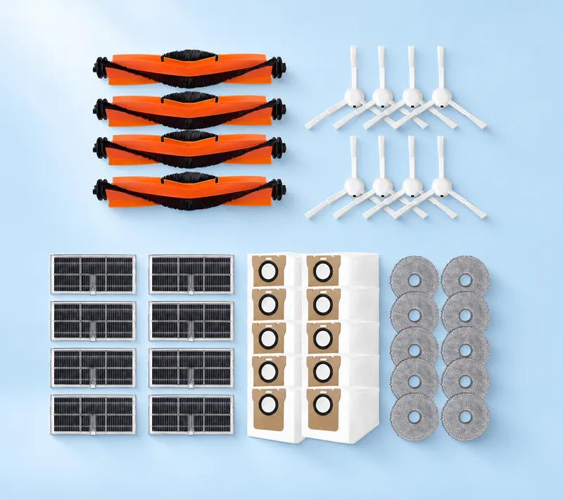
모서리 확장 물걸레 패드 교대하는 샤오미 미지아 M30S 1년 소모품 패키지 관리 핵심 규격·교체 기준 요약. 걸레 암이 바깥으로 뻗어 걸레받이와 가구 모서리를 닦아내는 샤오미 미지아 M30S는 원형 물걸레 패드 가장자리 파일이 일반 기종보다
원통형 롤러 물걸레와 전용 세제를 한 번에 챙기는 모바 S70 울트라 롤러 1년 세트 핵심 규격·교체 기준 요약. 원통형 롤러 물걸레로 바닥을 닦아내는 모바(MOVA) S70 Ultra Roller는 롤러 튜브의 주기적인 교대 건조와 전용 클리너 보충을 함께 해 주면...
에코백스 디봇 로봇청소기 물걸레 냄새 줄이는 전용 클리너 1L 정량 관리 핵심 규격·교체 기준 요약. 에코백스 디봇 올인원 로봇청소기로 거실과 주방 물걸레 청소를 매일 돌리다
거실·주방 매일 청소하는 집을 위한 로보락 S10 MaxV Ultra 9종 세트 선택법 핵심 규격·교체 기준 요약. 거실 마루와 주방을 매일 로봇청소기로 관리하는 가정에서는 필터와 걸레 패드, 더스트백을 하나씩 낱개로 사는 것보다
온수 세척 후 본체 필터까지 챙기는 샤오미 X20 MAX 1년 소모품 세트 관리 핵심 규격·교체 기준 요약. 고온 물걸레 세척과 열풍 건조로 주방 바닥까지 깔끔하게 닦아주는 샤오미 로봇청소기 X20 MAX라도 본체 먼지통 안의 슬림형 헤파필터는 따로 분리해 말려 주어...
나르왈 프레오 Z10 울트라 둥근 삼각 물걸레·보라 고리 더스트백 서랍 정리 루틴 핵심 규격·교체 기준 요약. 모서리가 둥근 삼각형 물걸레 패드가 회전하며 바닥을 닦아내는 나르왈 프레오 Z10 울트라는 도톰한 패드 볼륨감과 스테이션 더스트백의 위생적인 교체가 관리의...
드리미 L20 울트라·X30 울트라 vs X40·X50 필터·더스트백 규격 비교와 1년 세트 핵심 규격·교체 기준 요약. 드리미 올인원 로봇청소기는 L20 Ultra·X30 Ultra 세대와 후속 X40·X50 세대의 먼지통 필터 길이 및 더스트백 카드 홀더 모양이...
에코백스 디봇 X11 프로 옴니(옴니사이클론) 롤러 걸레·V자 브러시 1년 세트 관리 핵심 규격·교체 기준 요약. 강력한 사이클론 흡입과 원통형 롤러 물걸레 세척을 결합한 에코백스 디봇 X11 프로 옴니(옴니사이클론)는 롤러 걸레의 파일 탄성과 다크그레이 필터의 통기...
강마루·타일 바닥재별 로보락 Qrevo 2 Pro 회전 걸레·브러시 1년 세트 관리 핵심 규격·교체 기준 요약. 거실 강마루와 주방 타일을 오가며 회전 물걸레 청소를 수행하는 로보락 Qrevo 2 Pro는 레드 스파이럴 고무 메인브러시와 원형 걸레 패드의 밀착력을 일...
걸레받이·모서리 스윙 청소하는 드리미 X40 울트라·L40 울트라 패드·브러시 관리 핵심 규격·교체 기준 요약. 벽면 걸레받이와 식탁 다리 주변을 닦을 때 우측 물걸레 패드와 사이드브러시가 바깥으로 확장되는 드리미 X40 Ultra(및 L40 Ultra)는 모서리 마...
실시간 오수 회수 롤러 쓰는 에코백스 T90 프로 옴니·T80 옴니 1년 세트 관리 핵심 규격·교체 기준 요약. 회전하는 원통형 롤러에 깨끗한 물을 분사하고 오수를 바로 긁어내는 에코백스 디봇 T90 프로 옴니(및 T80 옴니)는 롤러 슬리브의 흡수력과 V자 브러시...
로보락 Q Revo Curv vs Curv 2 Flow 물걸레 차이점과 Curv 2 Flow 1년 세트 핵심 규격·교체 기준 요약. 로보락 Q Revo 라인업 중 Q Revo Curv(회전 원형 패드)와 Q Revo Curv 2 Flow(원통형 롤러 물걸레)는 하단...
물걸레 청소 특화 에브리봇 Q3 플러스 회전 걸레·더스트백 1년 세트 관리 핵심 규격·교체 기준 요약. 물걸레 밀착력과 정숙한 주행으로 거실 마루 청소에 자주 쓰이는 에브리봇 Q3 플러스는 원형 물걸레 패드의 청결도와 스테이션 더스트백 통기성이 청소 품질을 좌우합니다.
나르왈 프레오 X 울트라 vs Z 울트라 소모품 차이 비교와 X 울트라 1년 세트 핵심 규격·교체 기준 요약. 나르왈 프레오 X 울트라와 프레오 Z 울트라는 둘 다
나르왈 프레오 Z 울트라 둥근 삼각 물걸레 압력 유지법과 보라 고리 더스트백 관리 핵심 규격·교체 기준 요약. 일반 원형 패드 대신 모서리가 둥근 삼각형(뢸로 삼각형) 회전 물걸레가 빈틈없이 맞물려 돌아가는 나르왈 프레오 Z 울트라는 두툼한 극세사 쿠션감이 바닥 닦임...
긴 머리카락 많은 집의 샤오미 미지아 M30 PRO 브러시·더스트백 1년 세트 관리 핵심 규격·교체 기준 요약. 스테이션에서 머리카락 커팅과 자동 먼지 비움을 도와주는 샤오미 미지아 M30 PRO라도 본체 하단 메인브러시 양끝 베어링 축과 더스트백 채워짐 상태를 주기...
벽면 밀착 스윙 물걸레 쓰는 샤오미 미지아 M30S 패드 마모·브러시 점검법 핵심 규격·교체 기준 요약. 걸레 암이 바깥으로 뻗어 걸레받이와 가구 모서리를 닦아내는 샤오미 미지아 M30S는 원형 물걸레 패드 가장자리 파일이 일반 기종보다

샤오미 X20+ vs X20 Pro vs X20 MAX 소모품 차이점과 X20 Pro 1년 세트 핵심 규격·교체 기준 요약. 샤오미 X20 시리즈는 이름이 비슷해 보여도 X20+, X20 Pro, X20 MAX 세 모델의 스테이션 구조와 먼지통 필터·브러시 세부 규격...

원룸·서재 본체 먼지통 비우는 샤오미 S20 필터 미세먼지 눈막힘 관리법 핵심 규격·교체 기준 요약. 자동 먼지 비움 스테이션 없이 본체 먼지통을 직접 비워 쓰는 콤팩트 로봇청소기 샤오미 S20은 먼지통 내부 주름 필터가 막히면 흡입력이 바로 줄어들기 때문에 필터 교...

복도 콘솔장 수납으로 깔끔한 샤오미 로봇청소기 M40 브러시·걸레 1년 세트 핵심 규격·교체 기준 요약. 거실이나 복도에 스테이션을 두고 쓰는 샤오미 로봇청소기 M40은 자주 교체하는 오렌지 V자 브러시와 원형 걸레 패드, 화이트 프레임 필터, 크라프트 칼라 더스트백...

나르왈 아쿠아 청소기 S10 Pro·S20 Pro·S30 Pro 롤러·필터 관리와 S10 Pro 1년 세트 핵심 규격·교체 기준 요약. 핸디형 습식 아쿠아 물걸레 청소기인 나르왈 S10 Pro를 매일 쓰다
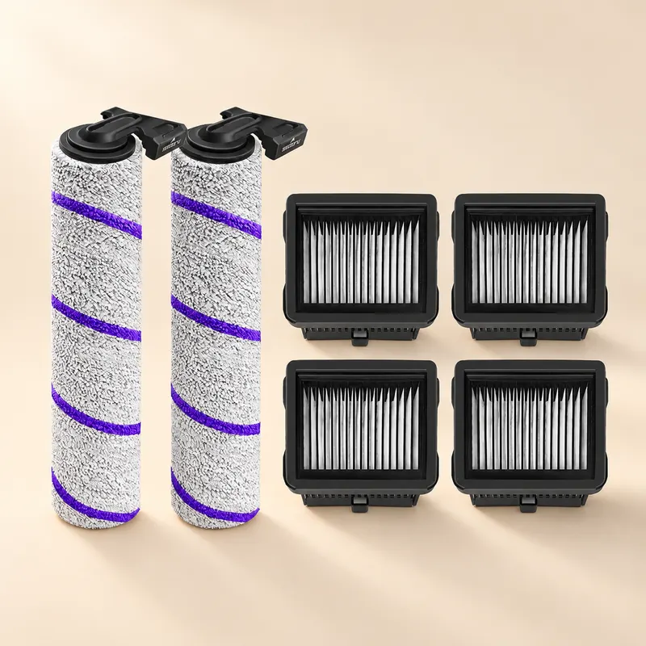
베란다·현관 타일 물청소 후 나르왈 S20 Pro 롤러 브러시·필터 교대 관리 핵심 규격·교체 기준 요약. 모래·흙먼지 제거를 위한 퍼플 스트라이프 롤러 브러시 수직 세척: 흙먼지가 묻은 브러시 롤러를 그대로 마루 위에 돌리면 바닥에 미세한 흠집이 날 수 있으므로,...
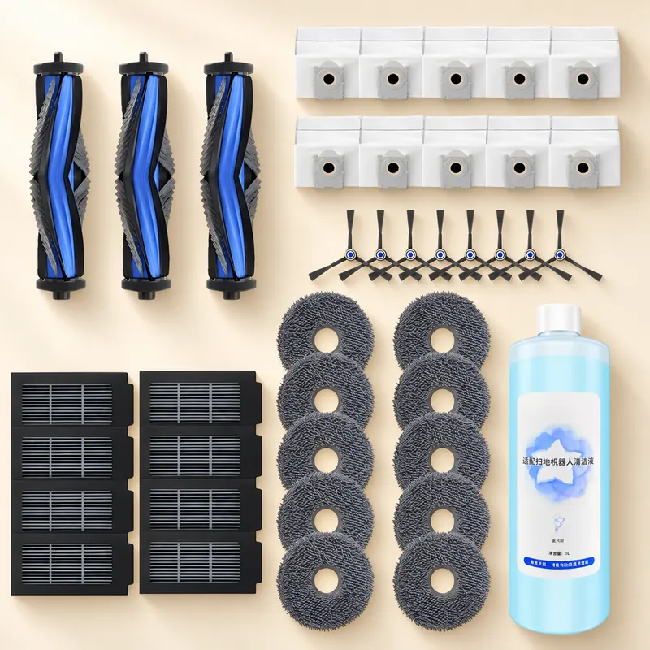
소파·침대 밑 낮은 틈새 청소하는 에코백스 T50 프로 옴니 브러시·필터 관리 핵심 규격·교체 기준 요약. 초슬림 본체 설계로 손이 닿지 않는 낮은 소파나 침대 프레임 밑까지 깊숙이 들어가 청소하는 에코백스 디봇 T50 프로 옴니는 가구 밑에 쌓여 있던 묵은 솜먼지와...

원통형 롤러 물걸레 속까지 말리는 모바 S70 울트라 롤러 세제 미포함 세트 핵심 규격·교체 기준 요약. 바닥을 닦는 동시에 오수를 긁어내는 원통형 롤러 물걸레 기종인 모바(MOVA) S70 Ultra Roller는 일반 원판형 걸레보다
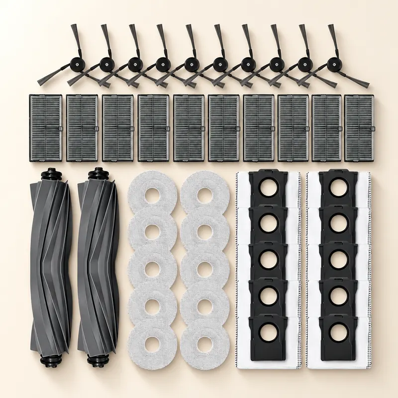
장마철·겨울철 실내 환기 적을 때 모바 P70 프로 울트라 필터 쉰내 차단법 핵심 규격·교체 기준 요약. 창문을 오래 열어두기 어려운 겨울철이나 습도가 높은 장마철에는 로봇청소기가 돌아간 뒤 배기구에서 꿉꿉한 냄새가 느껴질 때가 있습니다.

벽면 모서리 스윙 물걸레 편마모 줄이는 모바 P70 프로 울트라 1년 세트 관리 핵심 규격·교체 기준 요약. 벽면과 가구 다리 모서리를 닦을 때 우측 물걸레 패드가 바깥으로 스윙해 밀착 청소하는 모바(MOVA) P70 Pro Ultra는 사용 시간이 쌓일수록 좌·우...

온수 물걸레 세척 기종을 위한 드리미 전용 세정제 1L 노즐·잔량 관리법 핵심 규격·교체 기준 요약. 60~80도 온수로 물걸레 패드를 세척하는 드리미 올인원 로봇청소기는 고온 환경에서도 거품이 과하게 일지 않고 배관에 잔여물이 남지 않는 전용 포뮬러 세정제를 사용하...
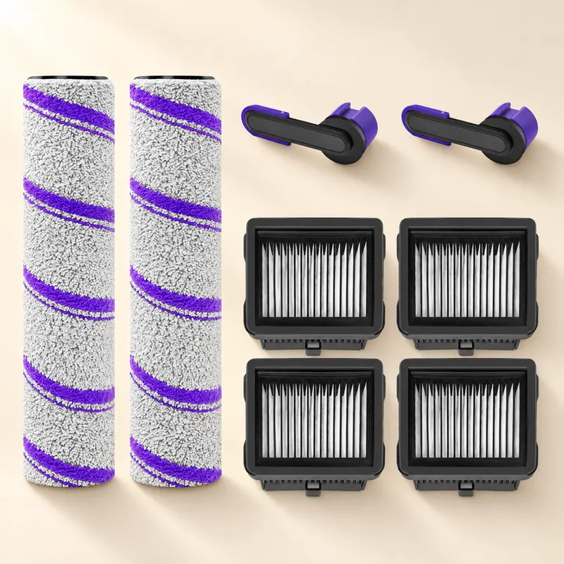
아이 식탁 밑·주방 국물 쏟았을 때 나르왈 S30 Pro 청소 후 냄새 차단 루틴 핵심 규격·교체 기준 요약. 아이 식탁 밑에 떨어진 이유식이나 주방 바닥에 튄 국물·음료를 나르왈 S30 Pro 아쿠아 물걸레 청소기로 빨아들이고 나면, 당장 바닥은 깨끗해져도 오수통...

주방 하부장 빌트인 직배수 드리미 X50s Pro Master 습기·소모품 관리법 핵심 규격·교체 기준 요약. 싱크대 하부장이나 다용도실 가구장 안에 직배수 스테이션을 매립해 사용하는 드리미 X50s Pro Master(X50 Master)는 가구장 내부 공기 순환이...

포세린 타일 바닥 줄눈 청소 후 로보락 S8 MaxV Ultra 세제 포함 1년 세트 관리 핵심 규격·교체 기준 요약. 무광 포세린 타일이나 폴리싱 타일 바닥은 줄눈 턱이 있어 로봇청소기 사이드브러시와 물걸레 패드가 일반 장판보다

로보락 S9 vs S10 필터·더스트백 규격 차이 비교와 S9 세제 미포함 세트 핵심 규격·교체 기준 요약. 한눈에 구별하는 S9 고유 포인트: 계단식 단차형 필터와 황토색 카드 더스트백: S9 MaxV Ultra 먼지통 필터는 테두리 한쪽이 계단처럼 꺾인 비대칭 단...

헤링본 원목마루 집의 로보락 S10 MaxV Ultra 브러시·걸레 관리와 세제 미포함 세트 핵심 규격·교체 기준 요약. 강마루나 헤링본 원목마루가 깔린 거실에서는 물걸레 패드에 단단한 먼지 알갱이가 박힌 채로 문질러지지 않도록 브러시 선(先)흡입과 걸레 패드 청결...
주방 요리 후 바닥 기름기 닦을 때 로보락 정품 세제 1L 정량 관리법 핵심 규격·교체 기준 요약. 고기나 생선을 구운 뒤 주방 바닥에 남은 미세한 기름막은 맹물 걸레질만으로는 뽀득하게 닦이지 않는 경우가 많습니다.
반려동물 털·러그 먼지 많은 집을 위한 로보락 S9 MaxV Ultra 브러시·필터 루틴 핵심 규격·교체 기준 요약. 거실에 단모 러그를 깔아 두었거나 반려동물과 함께 생활하는 가정에서는 로봇청소기 브러시 틈새와 먼지통 필터에 털과 미세 각질이 평소보다
로보락 Q Revo 2 Pro 원형 물걸레·듀오브러시 건조와 1년 세트 관리 핵심 규격·교체 기준 요약. 회전형 원형 물걸레와 엉킴 방지 2분할 브러시를 사용하는 로보락 Q Revo 2 Pro는 물걸레 패드와 필터를 여유 있게 교대 건조하면 매일 일정한 청소 컨디션을...
샤오미 로봇청소기 X20 MAX 물걸레·브러시 건조와 1년 세트 보관법 핵심 규격·교체 기준 요약. 온수 세척과 열풍 건조 기능을 갖춘 샤오미 로봇청소기 X20 MAX는 주황색 메인브러시와 원형 그레이 물걸레 패드, 슬림형 필터를 주기별로 교대 관리하면 청소 성능을...
나르왈 프레오 Z10 울트라 삼각 물걸레 건조와 1년 세트 정리법 핵심 규격·교체 기준 요약. 도톰한 삼각 모서리 회전 물걸레로 바닥을 꼼꼼히 닦아주는 나르왈 프레오 Z10 울트라는 세척 후 패드 속까지 보송하게 말려 교대로 장착하면 물걸레 컨디션을 오래 유지할 수...
에코백스 디봇 T90 프로 옴니 롤러 걸레 건조와 1년 세트 관리법 핵심 규격·교체 기준 요약. 원통형 롤러 물걸레로 바닥을 닦아내는 에코백스 디봇 T90 프로 옴니(T80 옴니 호환)는 롤러 슬리브의 파일 탄성과 V자 메인브러시 상태를 주기적으로 함께 점검해 주면...
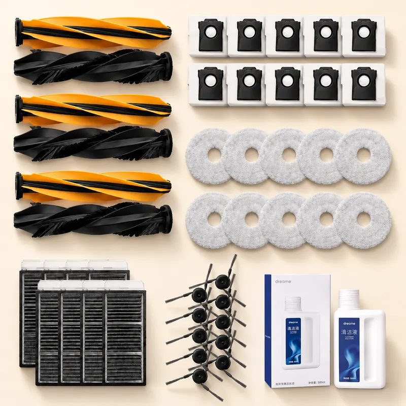
드리미 X50 Master 듀오브러시·더스트백 점검과 1년 세트 수납법 핵심 규격·교체 기준 요약. 슬림한 직배수 스테이션으로 주방이나 다용도실 가구장에 깔끔하게 들어가는 드리미 X50 Master는 2개의 원추형 듀오브러시와 원형 물걸레 패드를 주기에 맞춰 살펴보면...
로보락 Q Revo Curv 2 Flow 롤러 물걸레 건조와 1년 세트 보관 팁 핵심 규격·교체 기준 요약. 바닥을 가로지르는 원통형 롤러 물걸레가 탑재된 로보락 Q Revo Curv 2 Flow는 세척 후 롤러 슬리브 안쪽까지 바짝 말려 주는 교대 루틴이 중요합니다.

샤오미 로봇청소기 X20+ 1년 세트 구성과 브러시·물걸레·더스트백 관리법 핵심 규격·교체 기준 요약. 가성비 올인원 로봇청소기로 많이 쓰이는 샤오미 X20+는 물걸레 패드를 바람으로 말리는 방식이라 주기적으로 패드와 필터를 분리해 햇볕·그늘이 통하는 선반에서 교대...

샤오미 로봇청소기 X10+ 1년 세트 구성과 물걸레·더스트백·필터 교대 관리법 핵심 규격·교체 기준 요약. 자동 먼지 비움과 물걸레 세척을 꾸준히 수행해 온 샤오미 로봇청소기 X10+는 브러시와 원형 걸레 패드, 필터, 더스트백을 새것으로 교체해 주면 흡입력과 물걸레...
나르왈 프레오 X 울트라 1년 세트 구성과 브러시·삼각 물걸레·더스트백 관리법 핵심 규격·교체 기준 요약. 한쪽이 열린 원추형 브러시로 머리카락 엉킴을 줄인 나르왈 프레오 X 울트라는 브러시 날개와 둥근 삼각형 물걸레 패드, 본체 일체형 더스트백을 주기에 맞춰 교체해...
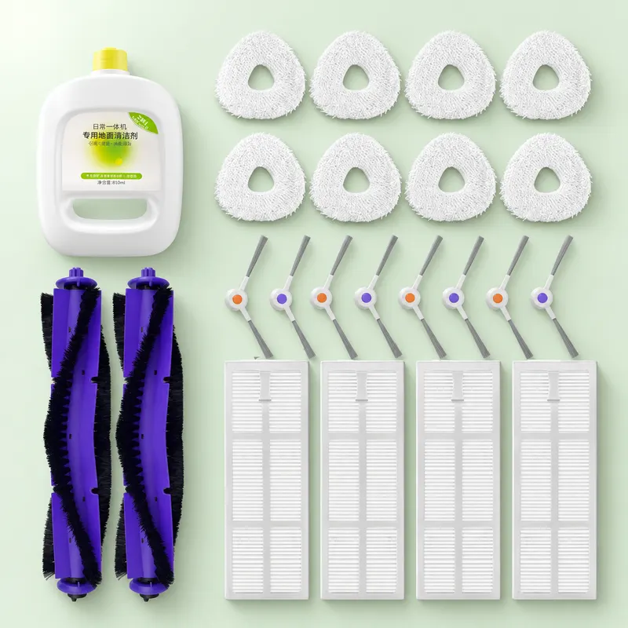
나르왈 프레오 1년 세트 구성과 전용 세제·삼각 물걸레·필터 관리법 핵심 규격·교체 기준 요약. 물걸레 세척과 건조에 특화된 나르왈 프레오(Freo) 모델을 오래 쓰다
나르왈 프레오 Z 울트라 1년 세트 구성과 삼각 물걸레·브러시·필터 관리법 핵심 규격·교체 기준 요약. 둥근 삼각형 회전 물걸레로 바닥 빈틈을 줄여 닦아내는 나르왈 프레오 Z 울트라는 걸레 패드 파일 두께와 보라색 포인트 더스트백, 필터를 주기에 맞춰 관리하면 늘 보...
샤오미 미지아 M30 PRO 1년 세트 구성과 브러시·물걸레·더스트백 관리법 핵심 규격·교체 기준 요약. 스테이션 자동 관리 기능이 강화된 샤오미 미지아 M30 PRO는 브러시와 원형 걸레 패드, 더스트백 여분을 미리 구비해 두면 청소 흐름이 끊기지 않습니다.
샤오미 미지아 M30S 1년 세트 구성과 브러시·물걸레·더스트백 관리법 핵심 규격·교체 기준 요약. 모서리까지 뻗어 닦는 확장형 물걸레 암을 탑재한 샤오미 미지아 M30S는 원형 물걸레 패드와 사이드브러시 마모 상태를 주기적으로 살펴보면 구석 청소 품질이 일정하게 유...
샤오미 로봇청소기 X20 Pro 1년 세트 구성과 물걸레·더스트백·필터 관리법 핵심 규격·교체 기준 요약. 올인원 스테이션으로 먼지 비움과 물걸레 세척·건조를 지원하는 샤오미 X20 Pro는 소모품 교체 주기를 미리 맞춰 두면 1년 내내 손이 덜 가는 자동 청소를 누...
샤오미 로봇청소기 S20 1년 세트 구성과 브러시·필터·물걸레 교체 루틴 핵심 규격·교체 기준 요약. 메인브러시 양끝 먼지 정리와 먼지통 필터 교대 세척: 자동 비움 스테이션 없이 본체 먼지통을 비우는 S20 모델은 먼지통 필터에 미세먼지가 빠르게 쌓이므로, 예비 필...
샤오미 로봇청소기 M40 1년 세트 구성과 브러시·물걸레·더스트백 관리법 핵심 규격·교체 기준 요약. 강력한 흡입력과 물걸레 세척 스테이션을 갖춘 샤오미 로봇청소기 M40은 브러시와 원형 걸레 패드, 더스트백을 주기적으로 교체해 주면 첫날 같은 청소 컨디션을 이어갈...
에브리봇 Q3 PLUS 1년 세트 구성과 원형 물걸레·더스트백·브러시 관리법 핵심 규격·교체 기준 요약. 흡입과 물걸레 청소를 함께 수행하는 에브리봇 Q3 PLUS는 바닥을 닦는 원형 물걸레 패드와 스테이션 먼지봉투, 필터를 주기에 맞춰 교체해 주면 언제나 깔끔한 청...
나르왈 S10 Pro 아쿠아 물걸레청소기 1년 세트 구성과 롤러·필터 관리법 핵심 규격·교체 기준 요약. 주방과 거실 바닥의 액체 오염까지 깔끔하게 닦아내는 나르왈 S10 Pro 아쿠아 물걸레청소기는 브러시 롤러의 극세사 결과 필터의 통기성을 주기적으로 관리해 주는...
나르왈 S20 Pro 아쿠아 청소기 1년 세트 구성과 브러시 롤러·필터 교대 관리 핵심 규격·교체 기준 요약. 가벼운 핸들링으로 바닥의 물기와 이물질을 한 번에 흡입하는 나르왈 S20 Pro 아쿠아 청소기는 젖은 브러시 롤러와 오수통 상단 필터를 교대로 말려 쓰면 쾌...
에코백스 디봇 T50 프로 옴니 1년 세트 구성과 물걸레·세제·더스트백 관리법 핵심 규격·교체 기준 요약. 슬림한 본체로 가구 아래까지 꼼꼼히 청소하는 에코백스 디봇 T50 프로 옴니는 회전 물걸레 패드와 사이드브러시, 더스트백을 주기적으로 교체해 주면 좁은 공간 청...
모바 S70 울트라 롤러 세제 미포함 1년 세트 구성과 롤러 물걸레 교대 루틴 핵심 규격·교체 기준 요약. 원통형 롤러 물걸레를 사용하는 모바 S70 Ultra Roller 기종에서 세제 여분이 충분할 때는 롤러 패드와 브러시, 필터, 더스트백만 모은 세제 미포함 1...
모바 P70 프로 울트라 세제 미포함 1년 세트 구성과 걸레·필터 교대 관리 핵심 규격·교체 기준 요약. 전용 세척액이 아직 넉넉히 남아 있다면 자주 닳는 브러시·물걸레·필터·더스트백만 모은 세제 미포함 패키지가 실속 있습니다.
모바 P70 프로 울트라 1년 세트 구성과 세제·물걸레·더스트백 관리법 핵심 규격·교체 기준 요약. 온수 세척과 자동 먼지 비움 기능을 갖춘 모바(MOVA) P70 Pro Ultra는 회전 물걸레 패드와 전용 세척액, 더스트백을 주기에 맞춰 함께 관리하면 청소 효율이...
나르왈 S30 Pro 아쿠아 청소기 1년 세트 구성과 브러시 롤러·필터 관리법 핵심 규격·교체 기준 요약. 바닥의 물기와 오염을 동시에 빨아들이는 나르왈 S30 Pro 아쿠아 청소기는 젖은 브러시 롤러와 먼지통 필터를 자주 헹궈 말려 주어야 상쾌한 흡입력을 유지할 수...
모바 S70 울트라 롤러 1년 세트 구성과 원통형 롤러 물걸레·브러시 관리법 핵심 규격·교체 기준 요약. 긴 원통형 롤러 물걸레로 바닥을 닦아내는 모바(MOVA) S70 울트라 롤러는 롤러 패드와 원추형 듀오브러시의 청결 상태가 청소 만족도를 좌우합니다.
에코백스 디봇 X11 프로 옴니 1년 세트 구성과 롤러 물걸레·브러시 관리법 핵심 규격·교체 기준 요약. 바닥을 일정한 압력으로 닦아내는 원통형 롤러 물걸레 기종은 롤러 파일의 탄성과 측면 체결 캡 상태를 주기적으로 살펴보면 닦임 품질을 오래 유지할 수 있습니다.
드리미 X50s Pro 직배수 Master 1년 세트 구성과 듀오브러시·물걸레 관리 핵심 규격·교체 기준 요약. 직배수 키트나 대용량 스테이션으로 물걸레 세척을 자주 돌리는 드리미 X50s Pro·Master 라인업은 브러시와 걸레 패드 마모 주기를 미리 챙겨 두면...
로보락 S8 MaxV Ultra 세제 포함 1년 세트 구성과 듀오롤러·걸레 올인원 관리 핵심 규격·교체 기준 요약. 자동 세제 투입 도크를 쓰는 S8 MaxV Ultra 사용자라면 소모품 5종과 전용 클리너를 한 번에 챙길 수 있는 세제 포함 패키지가 편리합니다.
로보락 S9 MaxV Ultra 세제 미포함 1년 세트 구성과 단차형 필터·걸레 관리법 핵심 규격·교체 기준 요약. 전용 세정제는 따로 구비해 두었고 브러시·단차형 필터·메인/미니 물걸레·더스트백만 한 번에 보충하고 싶을 때 세제 미포함 세트가 유용합니다.
로보락 S10 MaxV Ultra 세제 미포함 1년 세트 구성과 브러시·필터 교체 루틴 핵심 규격·교체 기준 요약. 집에 이미 전용 클리너 여분이 충분하다면 브러시·필터·물걸레·더스트백만 알차게 모은 세제 미포함 패키지가 합리적입니다.
로보락 세제 거품 걱정 줄이는 확인 순서와 1L 1병·2병 선택법 핵심 규격·교체 기준 요약. 물걸레 청소 후 바닥이 미끄럽거나 도크에 거품이 남는다면 세정제 종류와 투입량을 먼저 점검해 볼 필요가 있습니다.
로보락 S9 MaxV Ultra 메인·미니 물걸레 점검과 9종 세트 선택 가이드 핵심 규격·교체 기준 요약. S9 MaxV Ultra는 넓은 반원형 메인 물걸레와 가장자리를 닦는 원형 미니 패드를 함께 사용하므로, 걸레를 교체할 때 두 규격의 남은 수량을 함께 맞춰...
로보락 S8 Pro Ultra 듀오롤러 양끝 점검과 1년·6개월·3개월 세트 비교 핵심 규격·교체 기준 요약. 바닥 먼지를 쓸어 담는 S8 Pro Ultra의 적·흑 나선형 듀오롤러는 양끝 회전축 캡 부분에 감긴 머리카락만 주기적으로 빼내 주어도 회전 부담을 크게 덜...
에코백스 DEEBOT 세정제 1L 라벨 대조법과 1병·2병 선택 기준 핵심 규격·교체 기준 요약. 키가 있는 1L 원통형 용기 규격과 수납장 높이 확인: 에코백스 전용 1L 세정제는 슬림한 원통형 용기에 하얀 스크류 캡이 결합된 형태여서 좁은 다용도실 수납장 칸에도...

로보락 S8 MaxV Ultra 물걸레·미니 패드 건조 교대와 기간별 세트 고르기 핵심 규격·교체 기준 요약. 벽면 모서리까지 닦아주는 S8 MaxV Ultra는 넓은 반원형 메인 걸레 옆에 작은 원형 엣지 미니 걸레가 함께 회전하기 때문에 두 패드의 마모 상태를 나...
[2026-11-14 점검 #119] 샤오미 로봇청소기 X20 MAX 1년 세트 구성과 브러시·필터 관리법 (1년 세트 (세제 미포함)·6개월 세트 (세제 미포함) 옵션) — 샤오미X20MAX, 샤오미로봇청소기소모품, 샤오미X20소모품1년세트 핵심 규격 요약
[2026-11-13 점검 #118] 나르왈 프레오 Z10 울트라 1년 세트 구성과 삼각 물걸레·브러시 관리 (1년 세트 (세제 미포함)·6개월 세트 (세제 미포함) 옵션) — 나르왈프레오Z10울트라, 나르왈Z10소모품, 나르왈1년세트 핵심 규격 요약
[2026-11-13 점검 #117] 에코백스 T90 프로 옴니 1년 세트 구성과 롤러 물걸레·필터 관리법 (1년 세트·6개월 세트 옵션) — 에코백스T90프로옴니, 에코백스T80옴니, 에코백스소모품1년세트 핵심 규격 요약
드리미 L20 울트라 1년 세트 구성과 더스트백·카트리지 세제 점검법 핵심 규격·교체 기준 요약. 드리미 L20 울트라와 X30 울트라는 세로로 긴 블랙 프레임 필터와 크라프트지 칼라 더스트백, 납작한 직사각형 카트리지 타입 클리너를 사용해 X40·X50 시리즈와 소...
[2026-11-13 점검 #115] 드리미 X50 Master 1년 세트 구성품과 듀오브러시·물걸레 관리 체크 (1년 세트·6개월 세트 옵션) — 드리미X50Master, 드리미X50Ultra, 드리미소모품1년세트 핵심 규격 요약
로보락 S9 MaxV Ultra 필터 건조 교대 관리와 여분 기준 세트 고르기 핵심 규격·교체 기준 요약. 먼지통 필터를 물로 헹군 날 로봇청소기를 바로 돌려야 할 때, 완전히 마른 예비 필터 하나가 서랍에 있으면 건조 시간을 기다리지 않고 교대로 장착할 수 있습니다.
드리미 X40 울트라 1년 세트 구성과 실리콘 브러시·물걸레 관리법 핵심 규격·교체 기준 요약. 드리미 X40 울트라와 L40 울트라는 일체형 그레이 스파이럴 고무 메인브러시와 원형 회전 물걸레, 다크그레이 프레임 필터, 블랙 플라스틱 칼라 더스트백을 사용합니다.
[2026-11-13 점검 #113] 로보락 Q Revo Curv 2 Flow 1년 세트 구성과 롤러 물걸레·브러시 관리법 (1년 세트·6개월 세트 옵션) — 로보락QRevoCurv2Flow, 큐레보커브2플로우, 로보락소모품1년세트 핵심 규격 요약
로보락 S8 Pro Ultra 도크 세척브러시·필터 관리와 기간별 세트 선택 기준 핵심 규격·교체 기준 요약. 물걸레 패드를 자주 빨아 써도 세척 후 개운함이 덜하다면 본체 하단뿐 아니라 도크 안쪽 고속 세척브러시와 먼지통 필터 건조 상태까지 함께 살펴볼 시점입니다.
로보락 Q Revo 2 Pro 1년 세트 구성과 원형 물걸레·듀오브러시 관리 핵심 규격·교체 기준 요약. 로보락 Q Revo 2 Pro는 레드·다크그레이 2분할 원추형 메인브러시와 원형 회전 물걸레 패드, 가운데 세로 손잡이 바가 있는 블랙 프레임 필터를 사용합니다.
샤오미 로봇청소기 X20 MAX 1년 세트 구성과 브러시·필터 관리법 핵심 규격·교체 기준 요약. 샤오미 로봇청소기 X20 MAX는 오렌지색 V자 메인브러시와 가로로 긴 슬림형 블랙 프레임 필터, 크라프트지 칼라 더스트백을 사용합니다.
로보락 S10 MaxV Ultra 브러시·더스트백 점검 순서와 9종 세트 고르는 법 핵심 규격·교체 기준 요약. 로보락 S10 MaxV Ultra를 관리할 때는 가운데 틈으로 머리카락을 모아 보내는 듀오디바이드 브러시 구조와 세로 손잡이 탭이 달린 직사각 필터, 회색...
나르왈 프레오 Z10 울트라 1년 세트 구성과 삼각 물걸레·브러시 관리 핵심 규격·교체 기준 요약. 나르왈 프레오 Z10 울트라는 둥근 삼각형 모양의 두툼한 물걸레 패드와 퍼플·블랙 원추형 플로팅 메인브러시, 좌우 허브 색상이 구분된 2암 사이드브러시를 사용합니다.
에코백스 T90 프로 옴니 1년 세트 구성과 롤러 물걸레·필터 관리법 핵심 규격·교체 기준 요약. 에코백스 디봇 T90 프로 옴니와 T80 옴니는 회전 원판 대신 원통형 극세사 롤러 물걸레와 블루·블랙 V자 메인브러시, 곡선형 2암 블루 사이드브러시를 사용합니다.
에코백스 DEEBOT 전용 세제 1L 보충 전, 투입 방식 확인과 1병·2병 선택 핵심 규격·교체 기준 요약. 에코백스 정품 세제 1L 옵션별 구성과 확인 기준: 대용량 1L 원통형 병 규격으로, 스테이션 투입 방식과 청소 주기에 따라 수량을 선택할 수 있습니다.
로보락 S10 MaxV Ultra 필터·더스트백 서랍 정리와 9종 세트 선택법 핵심 규격·교체 기준 요약. 더스트백이나 먼지통 필터를 교체하려 수납함을 열었을 때 새 부품이 종류별로 나뉘어 있으면 필요한 부품만 바로 꺼내 장착할 수 있습니다.
드리미 X50 Master 1년 세트 구성품과 듀오브러시·물걸레 관리 체크 핵심 규격·교체 기준 요약. 드리미 X50 Master와 X50 Ultra는 옐로우·블랙 한 쌍으로 이루어진 원추형 듀오브러시와 다크그레이 주름 필터를 사용합니다.
로보락 S8 MaxV Ultra 듀오롤러·미니걸레 점검과 3·6·12개월 세트 비교 핵심 규격·교체 기준 요약. 로보락 S8 MaxV Ultra는 다른 S8 계열과 사이드브러시 발 수, 필터 모양, 가장자리 미니 걸레 유무가 달라 주문 전 부품 규격을 정확히 대조하는...
로보락 Q Revo Curv 2 Flow 1년 세트 구성과 롤러 물걸레·브러시 관리법 핵심 규격·교체 기준 요약. 로보락 Q Revo Curv 2 Flow는 2분할 원추형 메인브러시와 원통형 롤러 물걸레 구조를 사용해 일반 원형 패드 모델과 소모품 형태가 다릅니다.
드리미 로봇청소기 세제 500ml 개봉 후 보관법과 1병·2병 선택 가이드 핵심 규격·교체 기준 요약. 드리미 로봇청소기 도크에서 물걸레 온수·자동 세척을 자주 돌리는 가정이라면 한 병이 생각보다
드리미 로봇청소기 세제 500ml 보충 전, 세척판 점검과 1병·2병 선택 기준 핵심 규격·교체 기준 요약. 드리미 X40·X50·X60 계열 로봇청소기로 물걸레 세척을 반복하다
로보락 전용 세제 1L 보충 시점 기록법과 1병·2병 선택 기준 핵심 규격·교체 기준 요약. 자동 세제 투입 도크나 정수통 희석 방식을 쓰다
로보락 전용 세제 1L 리필 전, 자동 세제통과 정수통 모델 구분하기 핵심 규격·교체 기준 요약. 로보락 S10·S9·S8 시리즈 도크에 전용 클리너를 보충할 때는 자동 세제 카트리지에 원액을 채우는 기종인지, 정수통에 라벨 안내 비율대로 희석해 넣는 기종인지 먼저...
로보락 S9 MaxV Ultra 물걸레 패드 교체 전, 정품·호환 세제 옵션 고르는 기준 핵심 규격·교체 기준 요약. S9 MaxV Ultra 물걸레 패드와 사이드 브러시를 교체할 시기가 다가오면, 소모품 세트를 주문할 때 세제 포함 방식을 어떻게 고를지 함께 고민하...
로보락 S8 Pro Ultra 일시정지 10분 뒤 깜박임, 수면 상태일까요? 핵심 규격·교체 기준 요약. 바닥의 물건을 치우느라 청소를 잠시 멈춰 두었는데, 한참 뒤 전원 표시등이 몇 초 간격으로 깜박인다면 고장부터 걱정되기 쉽습니다.
로보락 S10 MaxV Ultra 물걸레·더스트백 교체 전, 세제 미포함 세트가 맞는 경우 핵심 규격·교체 기준 요약. 물걸레 패드와 더스트백, 필터는 교체할 시점이 됐는데 지난번에 사 둔 클리너 세제는 아직 반 병 이상 남아 있을 때가 있습니다.
로보락 S8 MaxV Ultra 1년·6개월·3개월 세트, 옵션 차액과 여분 점검법 핵심 규격·교체 기준 요약. S8 MaxV Ultra는 듀얼 메인브러시와 큰 물걸레 외에 작은 가장자리 물걸레까지 함께 들어가는 구조라 단품보다
에코백스 T80·T90·X8·X11 세정제 1L, 1병·2병 옵션과 투입 전 체크 핵심 규격·교체 기준 요약. 에코백스 디봇(DEEBOT) 시리즈의 물걸레 세척용 세정제를 준비할 때는 먼저 바닥 청소용 로봇 모델인지, 대용량 1L 구성인지 확인해야 합니다.
드리미 X40·X50·X60 전용 세제, 1병·2병 선택과 리필 전 확인 순서 핵심 규격·교체 기준 요약. 드리미 로봇청소기로 물걸레 청소를 이어가다
로보락 정품 세제 1L, 1병과 2병 복수구매할인 중 무엇을 고를까요? 핵심 규격·교체 기준 요약. 브러시와 물걸레 여분은 아직 충분한데 세제만 먼저 떨어졌다면, 전체 소모품 세트 대신 세제 단품을 보충할 차례입니다.
로보락 S9 MaxV Ultra 3개월·6개월·1년 세트, 남은 여분으로 고르는 법 핵심 규격·교체 기준 요약. S9 MaxV Ultra의 필터나 물걸레를 갈아 끼우려다
로보락 S10 MaxV Ultra 소모품 세트, 세제 업그레이드와 미포함 고르는 기준 핵심 규격·교체 기준 요약. S10 MaxV Ultra 소모품 세트를 고를 때 3개월·6개월·1년마다
로보락 S8 Pro Ultra 브러시 양끝 머리카락, 캡도 빼서 정리하나요? 핵심 규격·교체 기준 요약. 메인브러시 겉에 감긴 머리카락을 걷어냈는데 양끝에는 여전히 뭉쳐 있나요?
로보락 S8 Pro Ultra 물걸레 전용 모드, 메인브러시는 어떻게 될까요? 핵심 규격·교체 기준 요약. 바닥을 한 번 정리한 뒤 물걸레만 돌리고 싶을 때, 메인브러시와 흡입 팬도 계속 움직일까요?
로보락 S8 MaxV Ultra 오류 42, 도크 세척 브러시가 한쪽에서 멈췄다면? 핵심 규격·교체 기준 요약. 물걸레를 씻던 도크에서 오류 42가 나고 세척 브러시 모듈이 한쪽에 멈췄다면, 소모품부터 주문하기보다
로보락 S8 MaxV Ultra 일시정지 후 도크에 손으로 올리면 청소가 이어질까요? 핵심 규격·교체 기준 요약. 청소가 끝나기 전에 로봇을 멈췄는데, 손으로 들어 도크에 올려도 남은 구역을 이어서 청소할까요?
로보락 S8 MaxV Ultra 먼지통 세척, 전용 세제를 넣어도 될까요? 핵심 규격·교체 기준 요약. 먼지통을 헹구는데 바닥 청소용 세제가 옆에 있으면 조금 넣고 싶을 수 있죠.
로보락 S8 MaxV Ultra 작은 가장자리 물걸레, 나사를 풀어야 할까요? 핵심 규격·교체 기준 요약. 큰 물걸레는 떼어 냈는데 옆의 작은 물걸레는 그대로라면, 같은 방법으로 잡아당기기 전에 고정 방식을 봐 주세요.
로보락 S8 MaxV Ultra 장기 보관, 소모품보다 먼저 챙길 충전 일정 핵심 규격·교체 기준 요약. 장기간 집을 비우거나 로봇청소기를 한동안 쉬게 할 때는 소모품을 더 사 두는 일보다
로보락 S8 Pro Ultra 물통 보충, 뜨거운 물 대신 챙길 순서 핵심 규격·교체 기준 요약. 깨끗한 물통을 다시 채우면서 물을 따뜻하게 해 넣고 싶을 때가 있죠.
로보락 S8 Pro Ultra 브러시 추가 옵션, 메인과 세척을 구분하세요 핵심 규격·교체 기준 요약. 브러시를 추가하려고 옵션을 펼쳤는데 한쪽은 1개, 다른 쪽은 2개라고 쓰여 있으면 수량부터 비교하게 되죠.
로보락 S8 Pro Ultra 소모품 무료배송, 국내배송이라는 뜻일까요? 핵심 규격·교체 기준 요약. 배송비가 무료라고 쓰여 있으면 국내에서 바로 보내는 상품으로 생각하기 쉽죠.
로보락 S8 Pro Ultra 걸레 건조가 중간에 멈췄다면, 버튼과 출발 기록을 보세요 핵심 규격·교체 기준 요약. 청소가 끝난 뒤 걸레를 말리는 동안, 바닥에 흘린 것을 닦으려고 로봇을 다시 출발시키거나 본체 버튼을 누를 때가 있죠.
로보락 S8 Pro Ultra 밤에 먼지 비우기가 안 될 때, 더스트백부터 바꿔야 할까요? 핵심 규격·교체 기준 요약. 밤에 청소를 마친 S8 Pro Ultra가 도크로 돌아왔는데 먼지 비우는 소리가 나지 않았다면, 더스트백부터 새로 살 필요는 없어요.
로보락 S8 Pro Ultra 필터 주문 전, 먼지통 필터와 도크 물필터를 구분하세요 핵심 규격·교체 기준 요약. S8 Pro Ultra 필터를 찾다가 먼지통 안의 필터와 도크 바닥의 필터가 함께 나와 헷갈릴 수 있어요.
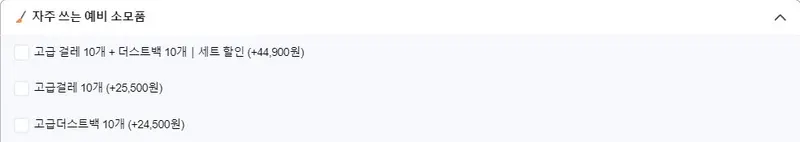
로보락 S9 MaxV Ultra 물걸레·더스트백, 따로 추가할 때와 묶음 가격 차이는? 핵심 규격·교체 기준 요약. 물걸레 여분도 줄고 더스트백도 몇 장 남지 않았다면, 두 품목을 함께 준비할 때가 있죠.

로보락 S9 MaxV Ultra 소모품, 세트에 필터 4개를 더 추가하려면? 핵심 규격·교체 기준 요약. 제이상점 S9 MaxV Ultra 상품은 필수 세트를 고른 뒤, 추가 옵션에서 필터 4개를 더하는 방식으로 살펴볼 수 있어요.

로보락 S8 Pro Ultra 사이드 브러시 청소, 나사 분리와 재장착 순서 핵심 규격·교체 기준 요약. 판매자 안내｜제이상점이 제조사 공식 설명서와 현재 자사 상품·옵션을 조사해 직접 작성했습니다.

로보락 S8 MaxV Ultra 앞바퀴 청소, 바퀴·축과 고정 브래킷 구분 핵심 규격·교체 기준 요약. 판매자 안내｜제이상점이 제조사 공식 설명서와 현재 자사 상품·옵션을 조사해 직접 작성했습니다.

제이상점 넾다세일 쿠폰 2장, 발급 시간과 중복 적용 조건 핵심 규격·교체 기준 요약. 판매자 안내｜로봇청소기 소모품 전문점 제이상점이 공식 행사 안내와 자사 공지 자료를 바탕으로 직접 작성했습니다.

로보락 S9 MaxV Ultra 물만 쓸 때, 자동 세제 투입 설정 확인법 핵심 규격·교체 기준 요약. 판매자 안내｜제이상점이 제조사 공식 자료와 현재 자사 상품·옵션을 조사해 직접 작성했습니다.

로보락 S10 MaxV Ultra 도크 세척과 바닥 청소, 온수 안내가 다른 이유 핵심 규격·교체 기준 요약. 판매자 안내｜제이상점이 제조사 공식 자료와 현재 자사 상품·옵션을 조사해 직접 작성했습니다.
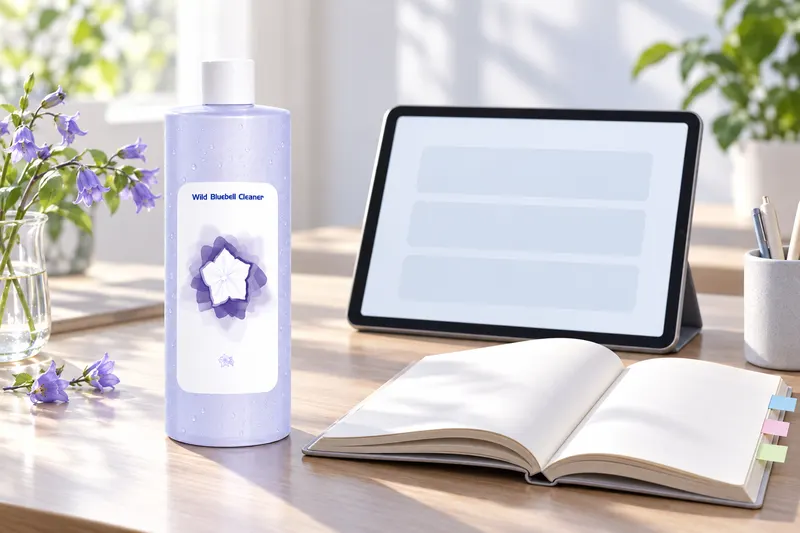
에코백스 X8 PRO OMNI 세제 안내가 다를 때, 설명서 모델·지역 확인법 핵심 규격·교체 기준 요약. 판매자 안내｜제이상점이 제조사 공식 자료와 현재 자사 상품·옵션을 조사해 직접 작성했습니다.
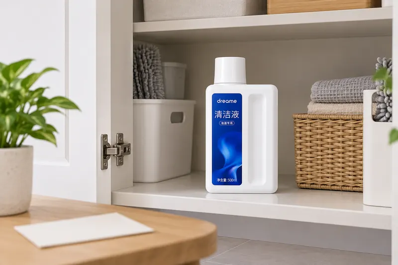
드리미 세제 500ml 개봉 뒤, 사용기한·보관 안내를 기록하는 법 핵심 규격·교체 기준 요약. 판매자 안내｜제이상점이 제조사 공식 자료와 현재 자사 상품·옵션을 조사해 직접 작성했습니다.

로보락 세제 리필 시점 기록하기, 한 병 사용 기간을 고정하기 어려운 이유 핵심 규격·교체 기준 요약. 판매자 안내｜제이상점이 제조사 공식 자료와 현재 자사 상품 정보를 조사해 직접 작성했습니다.

로보락 S8 MaxV Ultra 듀얼 롤러, 새 브러시 구매 전에 보는 마모 상태 핵심 규격·교체 기준 요약. 판매자 안내｜제이상점이 제조사 공식 설명서와 자사 상품 정보를 조사해 직접 작성했습니다.
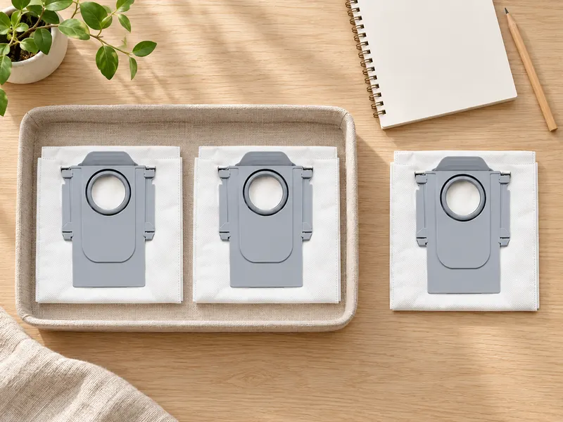
로보락 S8 Pro Ultra 더스트백, 남은 여분과 봉투 상태를 함께 확인하기 핵심 규격·교체 기준 요약. 판매자 안내｜제이상점이 제조사 공식 설명서와 자사 상품 정보를 조사해 직접 작성했습니다.
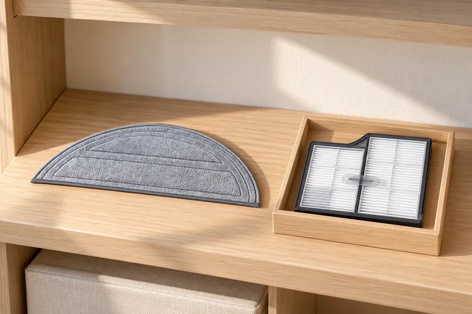
로보락 S9 MaxV Ultra 도크 주변 공간, 소모품 보관 자리와 구분하는 법 핵심 규격·교체 기준 요약. 판매자 안내｜제이상점이 제조사 공식 자료와 자사 상품 정보를 조사해 직접 작성했습니다.

로보락 S10 MaxV Ultra 전용 클리너는 기본 제공될까요? 본체 구매와 리필 구분 핵심 규격·교체 기준 요약. 판매자 안내｜제이상점이 제조사 공식 자료와 현재 자사 상품·옵션을 조사해 직접 작성했습니다.
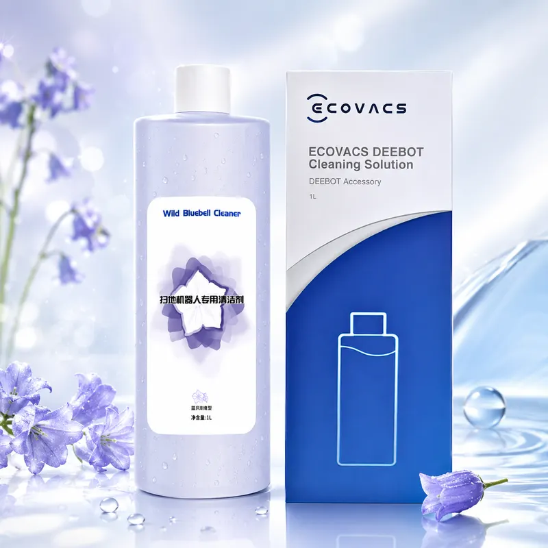
에코백스 DEEBOT 세제 수령 후, 주문 옵션과 병 라벨 대조하기 핵심 규격·교체 기준 요약. 판매자 안내｜제이상점이 제조사 공식 자료와 현재 자사 상품·옵션을 조사해 직접 작성했습니다.
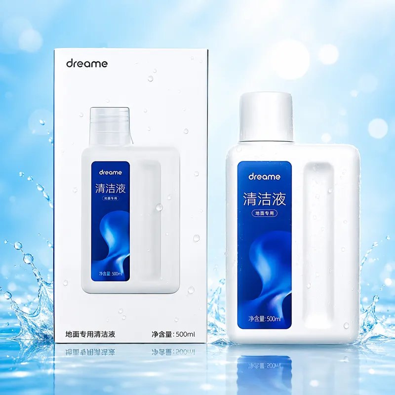
드리미 세제 500ml·1병·2병, 옵션과 주문 수량 읽는 법 핵심 규격·교체 기준 요약. 판매자 안내｜제이상점이 제조사 공식 자료와 현재 자사 상품·옵션을 조사해 직접 작성했습니다.

로보락 세제 480ml·1L, 해외 라벨 안내를 그대로 써도 될까요? 핵심 규격·교체 기준 요약. 판매자 안내｜제이상점이 제조사 공식 자료와 현재 자사 판매 옵션을 조사해 직접 작성했습니다.

로보락 S8 MaxV Ultra 카펫 우선·딥 카펫 청소 차이 핵심 규격·교체 기준 요약. 판매자 안내｜제이상점이 제조사 공식 자료와 현재 판매 옵션을 조사해 직접 작성했습니다.

로보락 S8 Pro Ultra 물걸레 세척, 천 패드와 고정판 분리 차이 핵심 규격·교체 기준 요약. 판매자 안내｜제이상점이 제조사 공식 설명서와 현재 판매 옵션을 조사해 직접 작성했습니다.
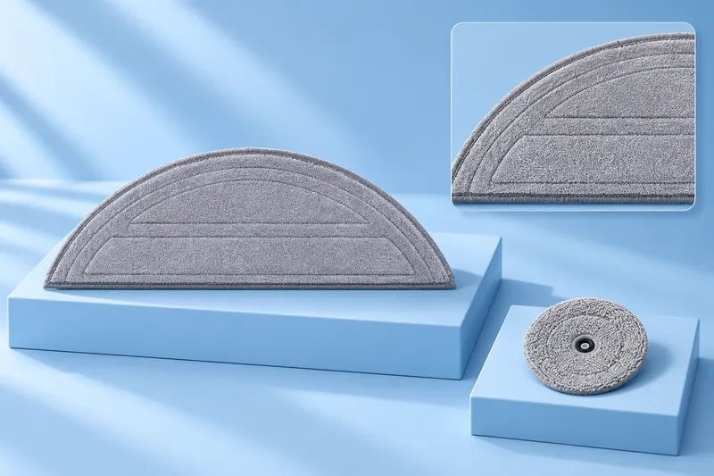
로보락 S9 MaxV Ultra 물걸레 세트, 메인·미니 수량 확인법 핵심 규격·교체 기준 요약. 판매자 안내｜제이상점이 제조사 공식 자료와 현재 판매 옵션을 조사해 직접 작성했습니다.

로보락 S10 MaxV Ultra 필터 호환 문의, 앞·뒤·옆 사진 찍는 법 핵심 규격·교체 기준 요약. 판매자 안내｜제이상점이 제조사 공식 자료와 현재 판매 옵션을 조사해 직접 작성했습니다.

에코백스 T80 OMNI·X8 PRO OMNI 세정액, 정수통에 넣으면 될까요? 핵심 규격·교체 기준 요약. 판매자 안내｜제이상점이 제조사 공식 자료와 현재 판매 옵션을 조사해 직접 작성했습니다.

드리미 X50 Ultra 세제통 잔량이 줄지 않을 때 확인할 것 핵심 규격·교체 기준 요약. 판매자 안내｜제이상점이 공식 자료와 현재 판매 옵션을 조사해 직접 작성했습니다.

로보락 정품 세제 1L, 1병·2병 구매 수량 계산 핵심 규격·교체 기준 요약. 판매자 안내｜제이상점이 공식 자료와 현재 판매 옵션을 조사해 직접 작성했습니다.
로보락 S8 MaxV Ultra 물걸레 재세척·바닥 재청소 차이 핵심 규격·교체 기준 요약. 판매자 안내｜제이상점이 공식 설명서와 현재 판매 옵션을 바탕으로 직접 작성했습니다.
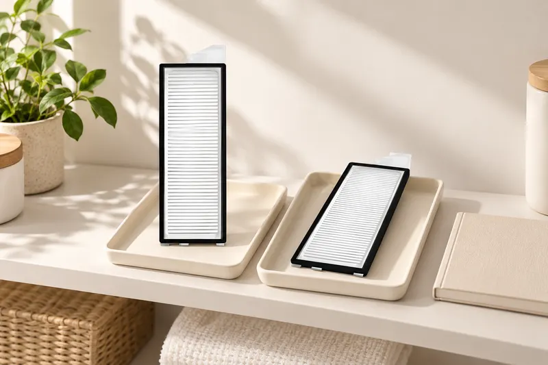
로보락 S8 Pro Ultra 필터 세척 후 24시간 건조·재장착 안내 핵심 규격·교체 기준 요약. 판매자 안내｜제이상점이 공식 설명서와 현재 판매 옵션을 바탕으로 직접 작성했습니다.
로보락 S9 MaxV Ultra 물걸레 자동 분리와 리프팅 차이 핵심 규격·교체 기준 요약. 판매자 안내｜제이상점이 직접 작성했으며 자사 스마트스토어 마케팅 링크를 포함합니다.

로보락 S10 MaxV Ultra 더스트백 교체 알림, 앱과 따로 확인할 것 핵심 규격·교체 기준 요약. 판매자 안내｜제이상점이 직접 작성했으며 자사 스마트스토어 마케팅 링크를 포함합니다.
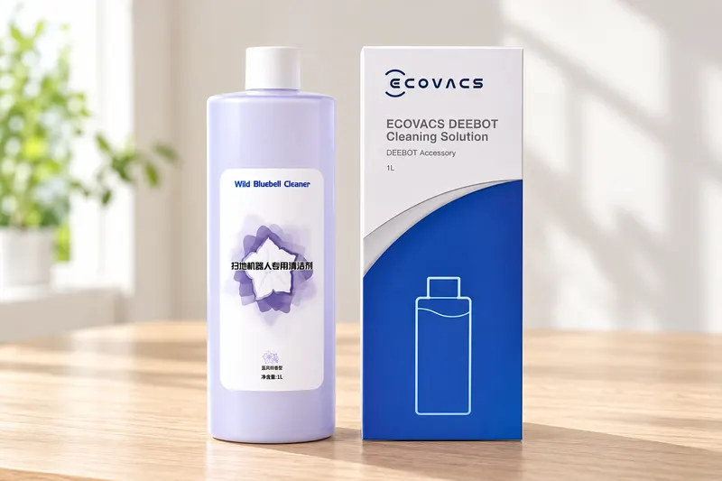
에코백스 세제 구매 전, DEEBOT과 WINBOT 제품부터 구분하세요 핵심 규격·교체 기준 요약. 판매자 안내｜제이상점이 공식 자료와 현재 판매 구성을 확인해 작성했습니다.

드리미 로봇청소기 세제, 구매 전 모델명·병 라벨 확인법 핵심 규격·교체 기준 요약. 판매자 안내｜제이상점이 공식 자료와 현재 판매 구성을 확인해 작성했습니다.
로보락 세제 거품이 많을 때, 로봇청소기 사용 전 확인할 점 핵심 규격·교체 기준 요약. 판매자 안내｜제이상점이 공식 자료와 현재 판매 구성을 확인해 작성했습니다.
로보락 S8 MaxV Ultra 세제 자동 투입과 소모품 준비 체크 핵심 규격·교체 기준 요약. 판매자 안내｜제이상점이 공식 자료와 현재 판매 구성을 확인해 작성했습니다.
로보락 S8 Pro Ultra 소모품, S8 MaxV와 헷갈리지 않는 주문 체크 핵심 규격·교체 기준 요약. 판매자 안내｜제이상점이 공식 자료와 현재 판매 구성을 확인해 작성했습니다.
로보락 S9 MaxV Ultra 소모품 교체 전 확인할 4가지와 세트 선택법 핵심 규격·교체 기준 요약. 판매자 안내｜제이상점이 직접 작성한 상품 안내 글이며 자사 스마트스토어 구매 링크를 포함합니다.

로보락 S10 MaxV Ultra 소모품, 세제·물걸레·더스트백 세트 고르는 법 핵심 규격·교체 기준 요약. 판매자 안내｜제이상점이 직접 작성한 상품 안내 글이며, 자사 스마트스토어 구매 링크를 포함합니다.